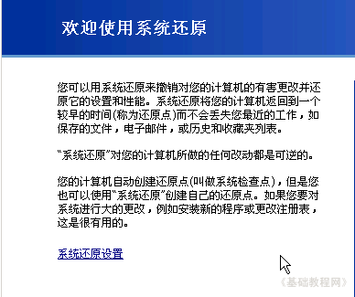
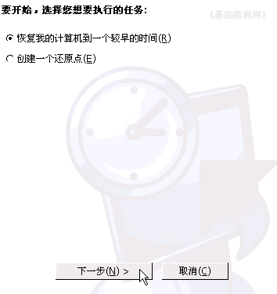
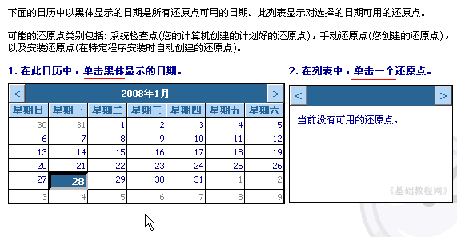
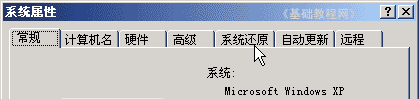
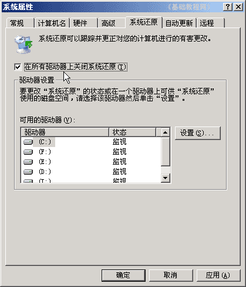
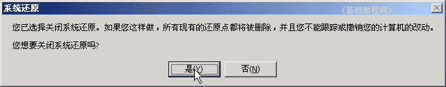
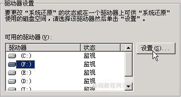
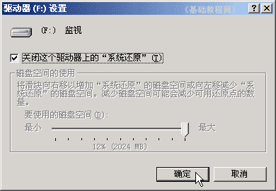

电脑操作基础
二十九、系统还原 返回
系统还原可以简单的恢复系统到上一个时间，一般在安装系统程序、补丁更新时，会创建一个系统还原点，缺点是占用一定的磁盘空间，并且有可能在里面隐藏病毒；
1、运行程序
1）点“开始－所有程序－附件－系统工具－系统还原”进入程序窗口；

2）在右边窗口中选择“用恢复到较早时间”，点击“下一步”进入时间选择；

3）在出来的恢复点选择中，选择一个较早的粗黑日期，点击选中，然后点“下一步”按钮；

4）然后按提示一步一步操作，系统重启后，将会进行系统还原；
2、关闭系统还原
1）在桌面“我的电脑”上敲右键选择“属性”命令，出来一个属性面板；
2）在上边点击选中“系统还原”标签，进入系统还原设置；

3）点击选中上面的“在所有驱动器上关闭系统还原”，然后点下面的“应用”按钮；

4）在出来的提示里点“是”即可关闭系统还原了；

5）如果想关闭其中的某一个驱动器，可以先选中这个磁盘，然后点右边的“设置”按钮；

6）在出来的对话框里面打勾“关闭”，然后点“确定”按钮，出来一个确认提示，点“是”即可关闭这个磁盘的系统还原；

注意，C:盘中有系统是不让单独关闭还原的；
本节学习了在WinXP中使用和关闭系统还原的基本方法，如果你成功地完成了练习，请继续学习下一课内容；
本教程由86团学校TeliuTe制作|著作权所有
基础教程网：http://teliute.org/
美丽的校园……
转载和引用本站内容，请保留版权信息和本站链接。